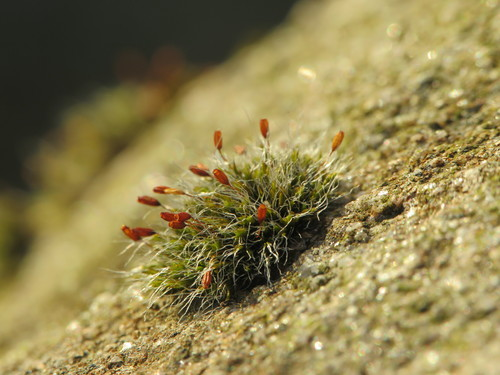

Grimmiaceae
Grimmia Moss Family / Bristle Moss Family
Grimmiaceae is a large and diverse family of primarily acrocarpous mosses, renowned for their adaptation to rupestral (rock-dwelling) habitats. They typically form dense cushions, tufts, or mats on exposed rock surfaces, walls, and boulders worldwide, especially in temperate, alpine, and polar regions. Many species have a characteristic dark green to blackish color and often appear hoary (whitish or greyish) due to the presence of hyaline (clear) hair-points at the leaf tips. Sporophytes typically feature erect, symmetric capsules on often short setae.
Overview
The Grimmiaceae family contains around 10 genera and approximately 350 species, making it a major component of bryophyte communities on rock surfaces globally. Genera like Grimmia, Schistidium, and Racomitrium (sometimes placed in its own family) are particularly species-rich and widespread. These mosses are pioneers and stress-tolerators, capable of colonizing bare rock and surviving extreme conditions of desiccation, temperature fluctuation, and high light exposure common in alpine, arctic, and exposed temperate environments.
Plants typically form dense cushions or tufts that help trap moisture and debris. Their often dark coloration may aid in absorbing heat in cold environments, while the common hyaline hair-points on the leaves are thought to reflect excess sunlight and perhaps aid in water absorption from dew or fog. The sporophytes, while variable, often feature erect, symmetric capsules on relatively short, straight setae (though longer and sometimes curved in Grimmia; capsules immersed in Schistidium). The peristome is typically single.
Ecologically, Grimmiaceae play a crucial role in primary succession on rock, initiating soil formation. Some species, like Racomitrium lanuginosum, can form extensive mats dominating certain heathland and tundra ecosystems. Phylogenetically, the family belongs to the order Grimmiales within the class Bryopsida.
Quick Facts
- Scientific Name: Grimmiaceae
- Common Name: Grimmia Moss Family, Bristle Moss Family
- Number of Genera: Approximately 10
- Number of Species: Approximately 350
- Distribution: Cosmopolitan, especially temperate, alpine, and polar regions.
- Habitat: Primarily rupestral (on rocks, boulders, cliffs, walls), occasionally thin soil over rock.
- Evolutionary Group: Bryophytes - Mosses (Class: Bryopsida, Order: Grimmiales)
Key Characteristics
Growth Form and Habit
Plants are acrocarpous, typically forming dense cushions, tufts, or sometimes extensive mats, often tightly attached to the rock substrate. Color ranges from green to olive-green, dark green, brownish, or blackish; frequently appearing hoary (greyish/whitish) due to hyaline leaf tips.
Stems
Stems are erect, usually branched, forming the dense structure of the cushion or tuft.
Leaves
Leaves are crowded, typically appressed or imbricate (closely overlapping) when dry, and erect-spreading to spreading when moist. Shape is usually lanceolate, ovate-lanceolate, or linear-lanceolate, often strongly keeled (V-shaped in cross-section). The costa (midrib) is single and strong, typically percurrent (reaching the tip) or excurrent (extending beyond). A highly characteristic feature of many species is the presence of a hyaline (clear, glass-like, whitish) hair-point of variable length at the leaf apex. Leaf margins are often recurved or plane, usually entire or slightly toothed near the apex. Leaf cells are typically small, quadrate or shortly rectangular, thick-walled, and often opaque. Cell walls can be straight or distinctly sinuose (wavy). Cells may be smooth or papillose depending on the genus/species. Basal cells are often longer, sometimes with thicker, more sinuose walls. Alar cells are generally not strongly differentiated.
Asexual Reproduction
Asexual reproduction via specialized gemmae or deciduous leaves/branchlets occurs in some species but is not a defining feature of the family as a whole.
Sporophytes (Reproductive Structures)
Sporophytes are terminal on main stems or short branches. The capsule is elevated on a seta, which is typically straight and often short (though longer in Racomitrium, sometimes curved in Grimmia). A major exception is the genus Schistidium, where the seta is extremely short, and the capsule remains immersed amongst the perichaetial leaves. The capsule is typically erect, symmetric, ovoid to cylindric or cupulate (cup-shaped in Schistidium), and smooth-walled (not ribbed). The peristome is characteristically single (haplolepidous), consisting of 16 lanceolate teeth, which are often papillose and sometimes cribrose (perforated) or split. The operculum (lid) is typically conic or rostrate (beaked). In Schistidium, the operculum and columella often fall together.
Habitat
Primarily rupestral, growing on a wide variety of rock types (acidic like granite, or basic like limestone, depending on species). Found on exposed boulders, cliffs, rock outcrops, scree slopes, man-made walls, and occasionally on thin soil over rock.
Field Identification
Identifying Grimmiaceae usually involves recognizing the acrocarpous, cushion-forming habit on rock, often combined with a hoary appearance and specific capsule features.
Primary Identification Features
- Habitat (Key Feature): Growing on rock surfaces (boulders, cliffs, walls).
- Growth Habit: Acrocarpous, forming dense cushions or tufts, often dark-colored.
- Hoary Appearance (Common Feature): Many species appear greyish or whitish due to hyaline hair-points at the leaf tips (check with hand lens).
- Capsule Position/Shape: Capsules typically erect and symmetric, ovoid/cylindric, on often short, straight setae (EXCEPT Schistidium, where capsules are immersed).
- Leaves: Lanceolate, often keeled, appressed when dry.
Secondary Identification Features
- Leaf Cells (Microscopic): Small, thick-walled, often quadrate or sinuose.
- Peristome (Microscopic): Single, 16 teeth.
Seasonal Identification Tips
- Year-round: The gametophyte cushions are persistent and visible year-round. Hyaline hair-points are always present on relevant species.
- Sporophyte Timing: Sporophytes are common in many species. Mature capsules can often be found throughout the year, especially the persistent immersed capsules of Schistidium. Exserted capsules often mature in spring or summer.
Common Confusion Points
Grimmiaceae can be confused with other acrocarpous mosses found on rock:
- Orthotrichaceae: Also common on rock (and bark), form cushions, often have erect, ribbed capsules, but peristome is typically double, and calyptra often hairy.
- Ptychomitriaceae: Leaves often strongly crisped when dry, capsule usually has a different shape and peristome structure.
- Bryaceae: Capsules are pendulous and pyriform, leaf cells larger, different habitat preference (though some grow on rock).
- Andreaeaceae: Also dark cushions on acidic rock, but capsule splits via longitudinal slits and sits on a pseudopodium.
- Seligeriaceae: Tiny mosses often in rock crevices, different capsule/peristome.
Focus on the combination of acrocarpous cushions on rock, often hoary appearance, and erect capsules (often on short setae, or immersed in Schistidium).
Field Guide Quick Reference
Look For:
- Habitat: Rock surfaces
- Acrocarpous cushions/tufts (often dark)
- Often hoary (whitish leaf tips - hyaline hair-points)
- Leaves lanceolate, often keeled
- Capsule erect, symmetric, ovoid/cylindric
- Seta often short & straight (or capsule immersed in Schistidium)
Key Variations:
- Presence/length of hyaline hair-point
- Capsule immersed (Schistidium) vs. exserted
- Seta length and curvature (Grimmia)
- Leaf cell wall sinuosity
Notable Examples
This large family includes many common rock-colonizing genera:

Grimmia pulvinata
Cushion Grimmia / Grey-cushioned Grimmia
Very common on walls, mortar, and base-rich rocks. Forms neat, dense, greyish-hoary cushions. Leaves have long hyaline hair-points. Capsules ovoid, ribbed when dry, on short, distinctly curved (arcuate) setae, often nestled among the leaves.

Schistidium apocarpum complex
Common Rock-fringe
An extremely common and variable group found on various rock types and walls. Forms dark green to blackish patches or tufts, often lacking prominent hair-points. Easily recognized when fertile by the immersed, cupulate capsules hidden among the upper leaves, with the lid often falling with the columella attached.

Racomitrium lanuginosum
Woolly Fringe-moss
(Often placed in Racomitriaceae). Forms extensive, loose, greyish-white mats, especially in acidic moorlands, bogs, and alpine/arctic tundra, covering soil, peat, or rock. Highly distinctive due to very long, white, papillose hyaline hair-points on the leaves. Capsules rare, on long setae.

Coscinodon cribrosus
Sieve-toothed Grimmia
Found on dry, exposed rocks, often sandstone. Forms dense, hoary cushions similar to Grimmia. Distinguished by its unique peristome teeth which are strongly perforated (cribrose), appearing sieve-like (requires microscope).
Phylogeny and Classification
Grimmiaceae is placed within the class Bryopsida and is the principal family of the order Grimmiales. This order is typically considered part of the subclass Dicranidae, a large group of mostly acrocarpous mosses characterized by certain peristome features.
The family itself is diverse, and relationships among the genera (Grimmia, Schistidium, Racomitrium, Coscinodon, etc.) have been extensively studied using both morphology and molecular data. The genus Racomitrium is sometimes elevated to its own family, Racomitriaceae, based on distinct features like often longer setae and different leaf cell wall patterns. Schistidium is clearly distinguished by its immersed capsules. The family represents a major evolutionary radiation onto rock substrates.
Position in Plant Phylogeny
- Kingdom: Plantae
- Division: Bryophyta (Mosses)
- Class: Bryopsida
- Subclass: Dicranidae
- Order: Grimmiales
- Family: Grimmiaceae (sometimes excluding Racomitriaceae)
Evolutionary Significance
Grimmiaceae is highly significant in bryophyte evolution:
- Mastery of Rupestral Habitats: Represents one of the most successful moss radiations onto exposed rock surfaces, showcasing adaptations to extreme desiccation, temperature, and UV stress.
- Hyaline Hair-Points: The convergent evolution of hyaline hair-points in many genera is a classic example of adaptation to high light and dry conditions.
- Sporophyte Variation: Shows interesting variation in sporophyte presentation, from exserted capsules on short or long setae (Grimmia, Racomitrium) to fully immersed capsules (Schistidium).
- Primary Succession: Plays a vital role in colonizing bare rock and initiating soil formation in many ecosystems.
- Biogeography: Its cosmopolitan distribution, including dominance in polar and alpine regions, provides insights into long-distance dispersal and adaptation to cold environments.